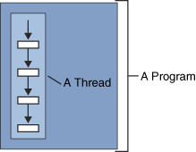
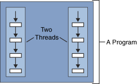

Webgpu notes:
Conventions
In this specification, the . ("dot") syntax,
common in programming languages, is used. The phrasing "Foo.Bar" means "the Bar
member of the value (or interface) Foo."
For example, where buffer is a GPUBuffer,
buffer.[[device]].[[adapter]] means "the [[adapter]]
internal slot of the [[device]] internal slot of buffer.
GPUBuffer
define buffer (internal object)
A GPUBuffer represents a block of memory that can be used in GPU operations.
Data is stored in linear layout, meaning that each byte of the allocation can be addressed
by its offset from the start of the GPUBuffer, subject to alignment restrictions
depending on the operation. Some GPUBuffers can be mapped which makes the block of memory
accessible via an ArrayBuffer called its mapping.
GPUBuffers are created via GPUDevice.createBuffer(descriptor) that returns a new buffer in
the mapped or unmapped state.
[Exposed=Window, Serializable]
interface GPUBuffer {
Promise mapAsync(GPUMapModeFlags mode, optional GPUSize64 offset = 0, optional GPUSize64 size);
ArrayBuffer getMappedRange(optional GPUSize64 offset = 0, optional GPUSize64 size);
undefined unmap();
undefined destroy();
};
GPUBuffer includes GPUObjectBase;
Early Destruction of WebGPU Objects {early-destroy}
Most of the memory usage of WebGPU objects is in the GPU process: it can be GPU memory held by objects like `GPUBuffer` and `GPUTexture`, serialized commands held in CPU memory by `GPURenderBundles`, or complex object graphs for the WGSL AST in `GPUShaderModule`.
The JavaScript garbage collector (GC) is in the renderer process and doesn't know about the memory usage in the GPU process.
Browsers have many heuristics to trigger GCs but a common one is that it should be triggered on memory pressure scenarios.
However a single WebGPU object can hold on to MBs or GBs of memory without the GC knowing and never trigger the memory pressure event.
It is important for WebGPU applications to be able to directly free the memory used by some WebGPU objects without waiting for the GC.
For example applications might create temporary textures and buffers each frame and without the explicit `.destroy()` call they would quickly run out of GPU memory.
That's why WebGPU has a `.destroy()` method on those object types which can hold on to arbitrary amount of memory.
It signals that the application doesn't need the content of the object anymore and that it can be freed as soon as possible.
Of course, it becomes a validation to use the object after the call to `.destroy()`.
[Exposed]
When the [Exposed] extended attribute appears on an interface, partial interface,
interface mixin, partial interface mixin, callback interface, namespace, partial namespace,
or an individual interface member, interface mixin member, or namespace member, it indicates
that the construct is exposed on that particular set of global interfaces.
Extended attributes
An extended attribute is an annotation that can appear on definitions, types as annotated
types, interface members, interface mixin members, callback interface members, namespace
members, dictionary members, and operation arguments, and is used to control how language
bindings will handle those constructs. Extended attributes are specified with an
ExtendedAttributeList, which is a square bracket enclosed, comma separated list of
ExtendedAttributes.
The ExtendedAttribute grammar symbol matches nearly any sequence of tokens, however
the extended attributes defined in this document only accept a more restricted syntax.
Any extended attribute encountered in an IDL fragment is matched against the following
five grammar symbols to determine which form (or forms) it is in:
WEB IDL
Web IDL is an interface description language (IDL) format for describing application
programming interfaces (APIs) that are intended to be implemented in web browsers.
Its adoption was motivated by the desire to improve the interoperability of web programming
interfaces by specifying how languages such as ECMAscript should bind these interfaces.
A Linear data structure have data elements arranged in sequential manner and each member
element is connected to its previous and next element. This connection helps to traverse a
linear data structure in a single level and in single run. Such data structures are easy to
implement as computer memory is also sequential. Examples of linear data structures are List,
Queue, Stack, Array etc.
Internal Objects
THREADS: A single thread has a beginning, a sequence,
and an end. At any given time during the runtime of the thread,
there is a single point of execution (start). However, a thread itself is not a program;
a thread cannot run on its own. Rather, it runs within a program.
The following figure shows this relationship.

A Web browser is an example of a multithreaded application.
Within a typical browser, you can scroll a page while it’s downloading an applet or an image,
play animation and sound concurrently,
print a page in the background while you download a new page, or watch three sorting
algorithms race to the finish.

An internal object is a conceptual,
non-exposed WebGPU object.
Internal objects track the state of an API object and hold any underlying implementation (methods?).
If the state of a particular internal object can change in parallel from multiple agents,
those changes are always atomic with respect to all agents.
Note: An "agent" refers to a JavaScript "thread" (i.e. main thread, or Web Worker).
Atomic or non-atomic:
Making the operation atomic consists in using synchronization mechanisms
in order to make sure that the operation is seen,
from any other thread, as a single,
atomic (i.e. not splittable in parts), operation.
That means that any other thread, once the operation is made atomic,
will either see the value of the object before the assignment,
or after the assignment. But never the intermediate value.
A simple way of doing this is to make a variable volatile (java).
When writing a long variable on a 32-bit system the variable
is written using two separate operations: one that writes the first 32 bits,
and a second one which writes the last 32 bits.
That means that another thread might read the value of the object, and see the intermediate state.
Web GPU cube
Adapted the not working example from hello-cube. This only works on google chrome canary and other browsers that support web-gpu using chrome://flags/#enable-unsafe-webgpu